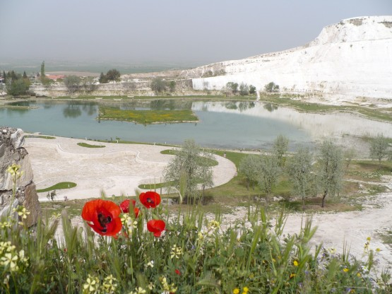
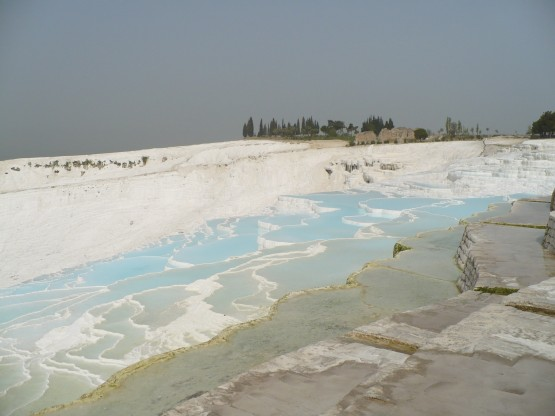
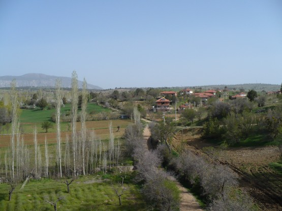

14 Апреля
Утром вид Памуккале меня впечатли еще больше, несмотря на то, что место для стоянки выбиралось глубокой ночью, оно оказалась замечательным. Спустился с горки, подъехал к полицейским попивающим чай под навесом, спросил разрешения оставить вел около них.
Заплатил 10 лир за вход на территорию Памуккале и пропал там на пол дня. Можно было бы и на день, но начинать первый день пути с дневки я не решился. Да, там есть что посмотреть, это точно.
На подходах к Памуккале:

Мне повезло, что приехал туда рано. Во первых было очень мало народу, во вторых жара в 30 с копейками начала доставать только в конце осмотра и я успел там все облазить.
Собственно вот оно:

Выше Памукалле расположены развалины древнего города Хиераполиса, которые тянутся на несколько километров. Все осмотреть, конечно, не получилось. Уезжать было немного жаль.
Хорошо сохранившийся амфитеатр: 
**
Трасса E87.
Первый подъем, 14 км непрерывно в гору, тяжеловато с непривычки. Все встречные машины сигналят, люди приветственно машут руками. С одной стороны иногда пугаюсь неожиданного сигнала догоняющего грузовика в паре метров от уха, но в целом приятно и доброжелательное отношение людей прибавляет сил.
Вид тех мест:

На ночевку остановился немного не доезжая перевала (пер. Казыкбели вроде) на территории национального парка. Спать никто не мешал.